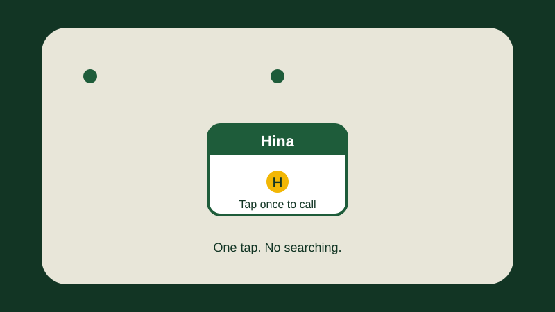

How to Put a Contact on Your Home Screen for One-Tap Calling
Naseem is 71 years old. He lives alone, and his daughter Hina lives in another city. Every evening, he calls her. It is the best part of his day. But getting to her number is a small struggle. First he opens the Phone app. Then he taps the Contacts tab. Then he scrolls through a long list of names, looking for "Hina". His eyes are not as sharp as they used to be, and sometimes his finger slips, and he taps the wrong name. Once he called his neighbour by mistake, and they both laughed, but it made him nervous about calling at all.
Last week, Hina visited him. She took his phone, pressed and held an empty place on the home screen, and did a few taps. When she gave it back, there was a big, clear card on the home screen, with Hina's name on it and a big green telephone picture. "Now you just tap this once," she said, "and it calls me." Naseem tapped it, and the phone rang. Now, every evening, he taps that one big card, and the call starts at once. No list, no scrolling, no wrong numbers.
That big card is called a contact shortcut. Tap it once, and the phone calls that person, or opens that person's contact card. This guide shows you how to put one on your home screen, how to choose between the two kinds, and how to remove it again without deleting the person from your phone.

What a home screen contact shortcut is
Think of your home screen as the front door of your house. A contact shortcut is like putting a photograph of your daughter on the front door, with a small bell under it. You ring the bell at the door, and she answers. You do not have to walk through the house to find her room.
A shortcut is not a new app, and it does not cost anything. It is only a link to a person who is already saved in your contacts. Tapping it does the same thing as finding that person in your contacts and tapping their number — it just skips all the searching in between. You can put one shortcut on your home screen for each person you call most: your daughter, your son, your wife or husband, your doctor, or a close friend. Most people start with one or two, and that is enough.
There are two kinds of shortcuts, and the difference matters. The first kind is called a "Contact" shortcut. When you tap it, it opens that person's contact card, where you can see their number, and then you tap the number to call. The second kind is called a "Direct dial" shortcut. When you tap it, the phone starts calling that person at once, with no extra tap. Direct dial is faster, but it is also easier to call someone by accident.
Before you start: save the contact first
A shortcut can only point to a person who is already saved in your contacts. If the person is not saved yet, the phone has nothing to point to, and you will not find their name in the list when you try to add the shortcut. So check first.
- Open the Contacts app. It is the app with a small person picture, often orange. If you cannot find it, open the Phone app and tap the Contacts tab at the bottom.
- Look for the person's name. Type the first letters of their name in the search box at the top, and see if their name appears.
- If the name appears, tap it, and check the number. If the person has two numbers, a mobile and a home number, check which one is there.
- If the name does not appear, save the contact first. Read How to Save a Contact and Find It Again on Your Samsung Galaxy, and come back to this guide when the contact is saved.
Method 1: add the shortcut from the home screen
This is the most common way, and it works on most Galaxy phones. You press and hold an empty place on the home screen, open the list of widgets, and choose the Contacts widget. A widget is a small, live piece of an app that sits on your home screen. Nothing here can break your phone.
- Go to your home screen. That is the first screen you see when you unlock your phone, the one with the clock and your most-used apps.
- Find an empty place on the home screen — a spot with no app picture on it. Press your finger on that empty spot, and hold it there for two seconds. Do not tap quickly. The screen should change, and a small menu should appear at the bottom, with words like "Wallpaper", "Widgets", and "Settings". If nothing happens, try a different empty spot, and hold a little longer.
- Tap Widgets. A list of widgets should open, grouped by app. The list can be long.
- Look for Contacts in the list. You may need to scroll down. Tap it. You should see one or two choices. Look for the words "Contact" and "Direct dial".
- Choose the kind you want. Tap "Contact" if you want the shortcut to open the person's card first, so you can check before you call. Tap "Direct dial" if you want the shortcut to call the person at once, with one tap. If you are not sure, choose "Contact" first. It is the safer choice.
- Now the phone should show you your list of contacts. Find the person you want. Type the first letters of their name in the search box, and tap their name when you see it.
- If the person has more than one number, the phone may ask you to choose a number. Tap the number you call most, usually the mobile number.
- The shortcut should now appear on your home screen, in the empty place you pressed. It should show the person's name, and a photo if they have one, or a coloured circle with the first letter of their name.
- Tap the shortcut once, to test it. If you chose "Contact", the person's card should open. If you chose "Direct dial", the phone should start calling. If you do not want to talk yet, tap the red button to end the call. Testing it once is the best way to know it works.
If the widget list does not show "Contacts" at all, do not panic. Check that you are looking in the Widgets list, not in the list of all apps, and scroll further down — the list is long. If it is still not there, try Method 2 below. Some phones hide the Contacts widget.
Method 2: add the shortcut from the Contacts app
Some Galaxy phones let you add a shortcut straight from the Contacts app. This method has fewer steps, but it is not on every phone. If you cannot find the choices below, go back to Method 1. Nothing is wrong with your phone — the choices are simply in a different place on your version.
- Open the Contacts app, and find the person you want.
- Tap the person's name to open their contact card. You should see their number, and perhaps a photo.
- Look for three small dots at the top right of the screen, or the word "More". Tap it. A small menu should open.
- Look in the menu for words like "Add to Home screen", "Create shortcut", or "Add shortcut". The exact words can be different, and on some phones this choice is not there at all. If you see it, tap it.
- The shortcut should now appear on your home screen. Tap it once, to test it, just as in Method 1.
If the menu has no choice about the home screen, your phone does not offer this method. That is normal. Use Method 1 instead. It works on most phones, and it gives you the choice between "Contact" and "Direct dial".
The two kinds of shortcuts, side by side
Choosing between "Contact" and "Direct dial" is the one decision in this guide that matters.
- "Contact" shortcut. Tap it once, and the person's card opens. You see their name, their photo, and their number. Then you tap the number, or the green call picture, and the call starts. It takes two taps. The good part is that you can check before you call, and you cannot call anyone by accident. This is the best choice if you share your phone with grandchildren, or if the phone sits in your pocket or bag.
- "Direct dial" shortcut. Tap it once, and the phone starts calling at once. The good part is speed: one tap, and you are talking. The risk is that one careless tap, for example when a grandchild is playing with the phone, starts a call you did not want. This is the best choice if you call the same person many times a day.
Naseem chose "Direct dial" for Hina, because he calls her every evening. But he chose "Contact" for his doctor, because he calls the doctor rarely, and he wants to check the number first. You can do the same: the fast one for the person you call every day, and the careful one for everyone else. If you change your mind later, remove the shortcut and add the other kind.
Put the shortcut where your thumb can find it
A shortcut only helps if you can find it without thinking. If it lands in a corner you never look at, it is no better than the long contacts list.
- Press and hold the shortcut on your home screen for two seconds, until it lifts, or a small menu appears. Do not tap it quickly, or the call will start.
- While you are still holding it, drag it slowly to a new place. A good place is the bottom half of the screen, near your thumb, or right next to the Phone app. To move it to a different home screen page, drag it to the edge of the screen, wait a second, and the page should change.
- Let go of your finger when the shortcut is where you want it. The phone should remember its new place.
Two more tips. First, keep the number of shortcuts small. One or two big shortcuts are easy to find. Six or eight fill the screen, and you are back to searching. Second, if your home screen is full of apps you never use, move the ones you do not need to the list of all apps, and leave the space for your shortcuts. For a full guide, read How to Change Your Wallpaper and Make Your Home Screen Easier to Read.
Practise with Naseem: add Hina in five minutes
Let us practise with Naseem. His daughter Hina is already saved in his contacts, with her mobile number. He goes to his home screen, and presses and holds an empty place, near the bottom, for two seconds. A small menu appears. He taps "Widgets", scrolls down to "Contacts", and taps it. He sees two choices: "Contact" and "Direct dial". He taps "Direct dial", because he calls Hina every day. The phone shows his contacts. He types "Hina", taps her name, and taps her mobile number. The shortcut appears on his home screen, a big card with Hina's name. He taps it once, and the phone calls Hina. The whole thing took him five minutes.
Now try the same practice yourself. Pick the person you call most, check that they are saved in your contacts, then follow Method 1, step by step. Tap the shortcut once, to test it. If the call starts, you have done it. If you tap it by accident during the week, remove it and add the "Contact" kind instead.
If the shortcut does not work
Sometimes the shortcut does not behave the way you expect. Do not panic. Work through these checks, in order. Most problems are one of these four.
- The shortcut is not on the home screen. First, check that you finished all the steps. Did you tap the person's name, and choose their number? If you closed the list without choosing a name, no shortcut was made. Try again, slowly. Second, check the other pages of your home screen. Swipe left and right — the shortcut may have landed on a different page.
- Tapping the shortcut does nothing. First, check that you are tapping the shortcut, not the empty space beside it. Tap the middle of the card, on the name or the photo. Second, check that you are not pressing and holding it. A quick tap opens it, and a long press lifts it for moving. Third, restart the phone, and try again.
- The shortcut calls the wrong number. This usually means the person has two numbers, and the shortcut was made with the wrong one. Remove the shortcut, as this guide shows, and add it again, choosing the other number this time. Also check the contact card itself: if the number saved there is wrong, fix it first, and then make a new shortcut.
- The shortcut disappeared after an update. After the phone updates its software, a shortcut can sometimes vanish from the home screen. The contact is still saved — only the shortcut is gone. Just add it again, following Method 1.
Remove the shortcut without deleting the contact
This is the part people worry about most, and it is the simplest part of all. Removing a shortcut from your home screen does not delete the person from your contacts. The person stays saved, with their number, exactly as before. Only the picture on the home screen goes away.
- Find the shortcut on your home screen.
- Press and hold it for two seconds, until it lifts, or a small menu appears.
- Look for the word "Remove", or a small rubbish-bin picture, at the top of the screen. Drag the shortcut to it, or tap "Remove" in the menu.
- Read the message on the screen, if there is one. It should say something like "Remove from Home screen". It should not say "Delete contact". If it says "Delete" without the words "from Home screen", stop, and tap "Cancel".
- The shortcut should be gone from the home screen. Now open your Contacts app, and look for the person's name. It should still be there, with the number.
If you ever remove a shortcut by mistake, nothing is lost. The contact is still saved, and you can add the shortcut again in less than a minute. A home screen shortcut can never delete a contact by itself.
What happens if the contact is deleted or the number changes
Two things can happen over time: a person changes their number, or a contact is deleted. Here is what to expect in each case.
If the number changes. Suppose Hina changes her mobile number. You save the new number in her contact card, and you delete the old one. The shortcut on your home screen will usually follow the change, because it points to Hina herself, not to the old number. But this does not always happen on every phone. If the shortcut still calls the old number, remove it and add a new one.
If the contact is deleted. Suppose you delete a contact by mistake, or a family member cleans up your contacts and deletes one. The shortcut on your home screen will usually disappear too, or it will show a grey picture and do nothing when you tap it. The shortcut cannot call a person who is not saved any more. If this happens, save the contact again, with the right number, and then add the shortcut again. For a full guide on saving contacts, read How to Save a Contact and Find It Again on Your Samsung Galaxy.
A warning about old numbers. After you change a number, do not trust the shortcut until you have tested it once. Tap it, let the call start, and check that the right person answers. If the wrong person answers, end the call at once. Then fix the number in the contact card, remove the old shortcut, and make a new one.
Common mistakes
- Tapping the shortcut instead of pressing and holding it to move it. A quick tap calls the person, or opens their card. To move the shortcut, you must press and hold it for two seconds, until it lifts. If the call starts while you are trying to move it, tap the red button to end the call.
- Choosing "Direct dial" for everyone. Direct dial is fast, but one careless tap starts a call. Use it only for the one or two people you call every day. For everyone else, use the "Contact" kind, which lets you check before you call.
- Trying to add a shortcut for a person who is not saved yet. The phone cannot find a name that is not in your contacts. Save the contact first, then add the shortcut. If the name does not appear in the list, that is the reason.
- Picking the wrong number when a contact has two. Many people have a mobile number and a home number. If you pick the home number by mistake, your call will ring an empty house. When the phone asks you to choose, read the labels carefully, and pick the mobile number.
- Thinking that removing the shortcut deletes the contact. It does not. The contact stays saved in the Contacts app. Only the picture on the home screen goes away. You can always add the shortcut back.
- Filling the home screen with shortcuts. Eight shortcuts are harder to use than two. Your thumb has to search again, which is the problem the shortcut was meant to solve. Keep it to one or two.
- Never testing the shortcut after making it. A shortcut you have not tested is a guess. Tap it once, right after you make it, and check that the right person is called. If it calls the wrong number, you will find out now, not in an emergency.
Frequently asked questions
How many contact shortcuts can I put on my home screen?
As many as you have space for, but two is a good number: one for the person you call most, and one for the next person. Keep them on the first home screen page, where you can see them without swiping.
Will the shortcut still work if I change my phone?
The shortcut itself does not move to a new phone. But if your contacts are saved to your Google or Samsung account, they will come to the new phone when you sign in. Then add the shortcut again.
Can I change the photo on a shortcut?
The shortcut shows the photo saved in the contact card. To change it, open the Contacts app, open the person's card, tap "Edit", and change the photo there. If the shortcut does not change at once, remove it and add it again. A face is easier to find than a name.
What if my phone does not show "Direct dial" at all?
Some phones, and some One UI versions, show only the "Contact" shortcut, and not "Direct dial". That is normal. Use the "Contact" shortcut instead. It takes one extra tap to call, but it works just as well, and it is safer against accidental calls. For a full guide, read How to Make a Phone Call and Call Back a Missed Call.
If the words on your screen look different
Menu words may look a little different on your phone. That is normal. Samsung makes many Galaxy models — A-series and S-series — and they do not all show the exact same words. Your phone company, called a carrier, can also change some words, and so can your country or region. And your One UI version matters. In October 2026, some phones use One UI 8, some use One UI 8.5, and some use One UI 9, depending on the model and the region. That is why this guide tells you to press and hold an empty place, to look for the word "Widgets", and to look for "Contact" and "Direct dial" in the list.
If you cannot find "Widgets" after pressing and holding the home screen, check two things. First, check that you pressed an empty place, not an app picture. Second, check that you held your finger down for two full seconds, and did not just tap quickly. If you cannot find "Direct dial" in the Contacts widgets, your phone may not offer it. Use the "Contact" shortcut instead.